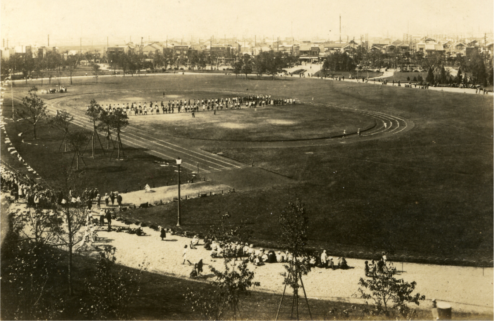
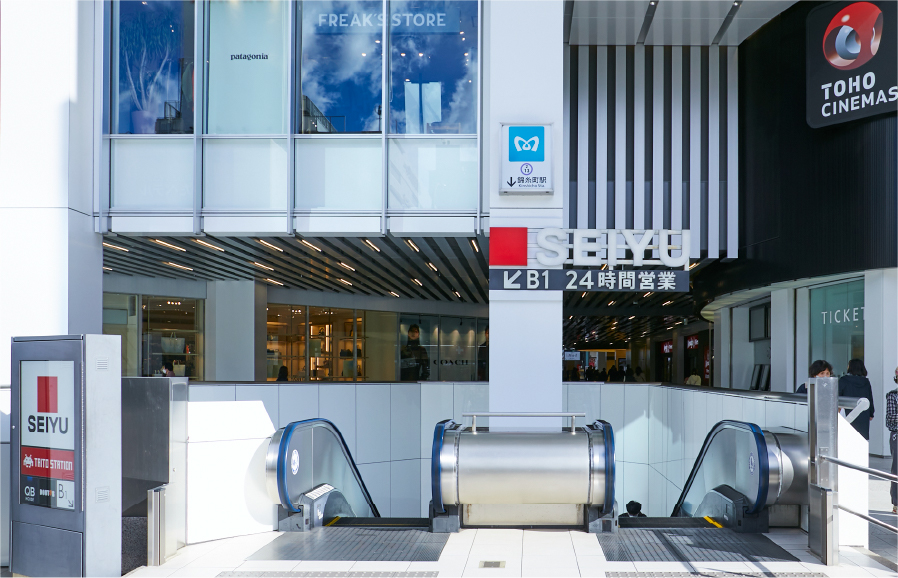
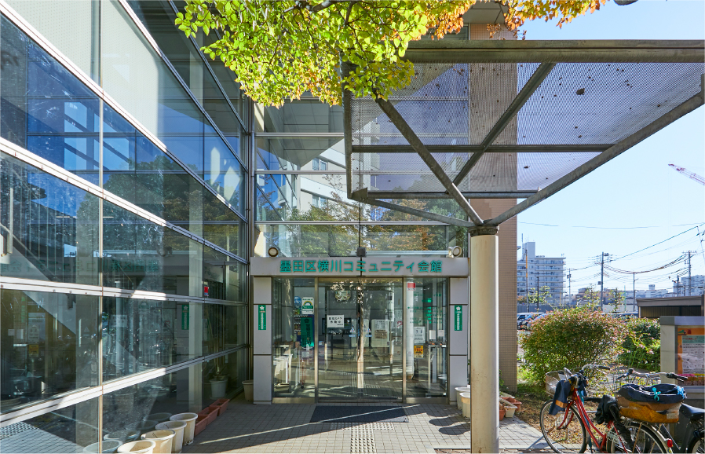

オリナス錦糸町店 （約240m／徒歩3分）
image photo
<
錦糸公園 （約210m／徒歩3分）
image photo

錦糸公園 （約210m／徒歩3分）
image photo
POSITION
-
都市生活の理想を
満たす舞台へ。 -
都心のオフィスに近いこと。
商業施設が身近に揃っていること。
豊かな自然に恵まれていること。
美味しいお店があること。
そんないくつもの理想とも言える条件を、
この街はさりげなく満たしている。
現地周辺航空写真
錦糸町駅北口
∼往古来今∼
現地周辺イラストマップ
-
■2006年4月商業施設
「オリナスモール（徒歩3分）」
「オリナスコア（徒歩3分）」
オープン -
■2011年「錦糸公園（徒歩3分）」再整備
関東大震災の復興事業によって生まれた歴史ある公園。
2011年に完了した再整備事業による美しい環境が広がり、憩いの場として、防災拠点として、地域の人々に親しまれています。 -

出典：土木図書館デジタルアーカイブス（画像提供：土木学会附属土木図書）
-
錦糸公園（約210m／徒歩3分）
■2023年度錦糸町駅前
「放射第32号線（錦糸町Ⅰ期）」拡幅事業開始
-
放射第32号線（錦糸町Ⅰ期）は、錦糸町駅前の錦糸公園前交差点から、春日通りと交わる横川交番前交差点までの約715mが幅員約22mの道路から約27mに拡幅整備されます。
車道はこれまで通り4車線、その両側に自転車通行空間と歩道が整備され、歩道は現在よりも拡幅されるほか電線を地下に埋める無電柱化や街路樹の植栽により、良好な都市景観が創出される予定です。放射第32号線（錦糸町Ⅰ期）事業（2032年度完成予定）／出典：東京都HP（2024年1月現在）
-
放射第32号線（錦糸町Ⅰ期）案内図／出典：東京都HP（2024年1月現在）
SHOPPING
-
多彩な大型商業施設を、
普段使いできるしあわせ。 -
バラエティ豊かなショップ＆レストラン、
映画館などで構成された
オリナス錦糸町を普段使いに。
駅周辺には、アルカキット錦糸町、
錦糸町マルイ、錦糸町PARCOなど、
多彩な商業施設が集積しています。
image photo
-
暮らしに欠かせない店舗も、
住まいのすぐそばに。オリナス錦糸町地下１階のBLΛNDEオリナス錦糸町店をはじめ、近隣には複数のスーパーやドラッグストアが揃っています。
-
西友錦糸町店
（約860m／徒歩11分）
-
BLΛNDE
オリナス錦糸町店（約240m／徒歩3分）
-

肉のハナマサ錦糸町店
（約480m／徒歩6分）
-
コモディイイダ食彩館
亀戸店（約540m／徒歩7分）
-

ドラッグセイムス
墨田横川店（約560m／徒歩7分）
-
オリンピック亀戸店
（約680m／徒歩9分）
-
マルエツ錦糸町店
（約860m／徒歩11分）
NATURE
-
広場に遊具、春の桜、
東京スカイツリーに出逢える、
錦糸公園へ徒歩3分。 -
ここに住むメリットは、
錦糸公園を庭のように使えること。
園内には、多彩な広場や遊具、噴水、
ランニングコースなどが充実。
東京スカイツリー（約1,510m／徒歩19分）の眺めも良く、
春にはお花見も楽しめます。
現地周辺イラストマップ

image photo

錦糸公園
（約210ｍ／徒歩3分）
image photo

錦糸公園
（約210ｍ／徒歩3分）

錦糸公園
（約210ｍ／徒歩3分）
image photo

錦糸公園
（約210ｍ／徒歩3分）
GOURMET
-
大人のグルメを魅了する、
上質な飲食店の数々。 -
こだわりが光る和の名店、
お洒落なビストロやカフェ。
錦糸町の周辺には、
舌の肥えたグルメに愛される、
上質な飲食店が充実しています。
［カフェ］
すみだ珈琲
（約230ｍ／徒歩3分）
［ホットケーキ］
厚焼き
ホットケーキのお店
「ねこづき」
（約560ｍ／徒歩7分）
［和菓子］
船橋屋
亀戸天神前本店
（約180ｍ／徒歩3分）
［串揚げ］
串揚げ 依知川
（約1,080ｍ／徒歩14分）
LIFE INFORMATION
各種施設が身近に揃う、コンパクトシティ。
-
オリナス錦糸町
-

西友錦糸町店
-
マルエツ錦糸町店
現地周辺地図
-
錦糸公園
-
ひがしんアリーナ（墨田区総合体育館）
-
大横川親水公園

現地周辺地図
-
区立錦糸小学校
-
区立錦糸中学校
-
柳島幼稚園
現地周辺地図
-
東京都立墨東病院
-
天神通りクリニック
-
錦糸町こどもクリニック
現地周辺地図
-
亀戸天神社
-

墨田区横川コミュニティ会館
-
本所郵便局
現地周辺地図
※距離表示については地図上の概測距離を、徒歩分数表示については80ｍを1分として算出し、端数を切り上げたものです。
※掲載の写真は2023年6月・11月、2025年2月撮影。
※掲載の航空写真は江東区亀戸付近上空から西方面を撮影（2023年10月）したものに現地部分の光などCG合成・加工をしたものです。また、周辺環境は将来変わる場合があります。
※掲載の現地周辺イラストマップ・現地周辺地図は、一部道路・施設等を抜粋して表記しています。
※掲載の情報は2025年3月現在のものです。
※店舗・施設の内容等は将来変わる場合があります。